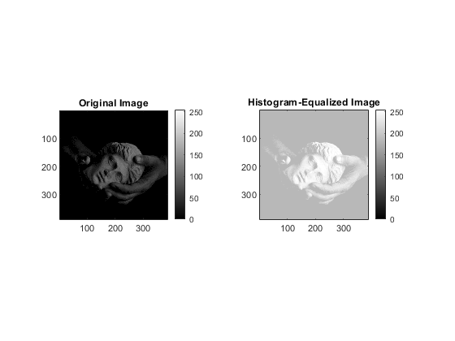

Contents
- myMainScript
- Reading images
- (a) ForegroundMask
- (b) Linear Contrast Stretching
- 1.
- 2.
- 3.
- 5.
- 6.
- 7.
- (c) Histogram Equalization
- 1.
- 2.
- 3.
- 5.
- 6.
- 7.
- (d) Histogram Matching
- (e) Contrast-Limited Adaptive Histogram Equalization (CLAHE)
- extracting results using fine tuned parameters
- The original image1 (barbara.png)
- The Clahed image1 (barbara.png)
- The original image2 (TEM.png)
- The Clahed image2 (TEM.png)
- The original image3 (canyon.png)
- The Clahed image3 (canyon.png)
- The original image6 (chestXray.png)
- The Clahed image6 (chestXray.png)
- Extracting results after varying Window Size parameter
- image1 with window size 100 (barbara.png)
- image1 with window size 100 (barbara.png)
- image2 with window size 10 (TEM.png)
- image2 with window size 100 (TEM.png)
- image3 with window size 10 (canyon.png)
- image3 with window size 100 (canyon.png)
- image6 with window size 10 (chestXray.png)
- image6 with window size 10 (chestXray.png)
- Observation for variation of window size parameter
- Extracting results for histogram threshold variation
- image1 with histogram threshold 0.1 (barbara.png)
- image1 with histogram threshold 0.05 (barbara.png)
- image2 with histogram threshold 0.1 (TEM.png)
- image2 with histogram threshold 0.05 (TEM.png)
- image3 with histogram threshold 0.1 (canyon.png)
- image3 with histogram threshold 0.05 (canyon.png)
- image6 with histogram threshold 0.1 (chestXray.png)
- image6 with histogram threshold 0.05 (chestXray.png)
- Observations for variation of histogram threshold
- THE END
myMainScript
clear; myNumOfColors = 255; myColorScale = [ [0:1/(myNumOfColors-1):1]',[0:1/(myNumOfColors-1):1]' , [0:1/(myNumOfColors-1):1]' ];
Reading images
im1 = imread('../data/barbara.png'); im2 = imread('../data/TEM.png'); im3 = imread('../data/canyon.png'); im4 = imread('../data/retina.png'); im5 = imread('../data/church.png'); im6 = imread('../data/chestXray.png'); im7 = imread('../data/statue.png'); im_ref= imread('../data/retinaRef.png');
(a) ForegroundMask
Threshhold intensity = 8
[fore_img, fore_img1 ,masked_img,masked_img1] = myForegroundMask(im7,8);
subplot(1,3,1); imagesc(single(im7),[0,255]), title('Original Image'),colormap(myColorScale),daspect ([1 1 1]); axis tight; colorbar; subplot(1,3,2); imagesc(single(fore_img),[0,255]), title('Binary Mask'),colormap(myColorScale),daspect ([1 1 1]); axis tight; colorbar; subplot(1,3,3); imagesc(single(fore_img1),[0,255]), title('Binary Mask(with Noise reduction)'),colormap(myColorScale),daspect ([1 1 1]); axis tight; colorbar;
subplot(1,2,1); imagesc(single(masked_img),[0,255]), title('Masked Image'),colormap(myColorScale),daspect ([1 1 1]); axis tight; colorbar; subplot(1,2,2); imagesc(single(masked_img1),[0,255]), title('Masked Image with different background'),colormap(myColorScale),daspect ([1 1 1]); axis tight; colorbar;
(b) Linear Contrast Stretching
%Formula
1.
[cont_img1] = myLinearContrastStretching(im1);
subplot(1,2,1); imagesc(single(im1),[0,255]), title('Original Image'),colormap(myColorScale),daspect ([1 1 1]); axis tight; colorbar; subplot(1,2,2); imagesc(single(cont_img1),[0,255]), title('Contrast-Enhanced Image'),colormap(myColorScale),daspect ([1 1 1]); axis tight; colorbar;
2.
[cont_img2] = myLinearContrastStretching(im2);
subplot(1,2,1); imagesc(im2,[0,255]), title('Original Image'),colormap(myColorScale),daspect ([1 1 1]); axis tight; colorbar; subplot(1,2,2); imagesc(cont_img2,[0,255]), title('Contrast-Enhanced Image'),colormap(myColorScale),daspect ([1 1 1]); axis tight; colorbar;
3.
[cont_img3] = myLinearContrastStretching(im3);
subplot(1,2,1); imagesc(im3,[0,255]), title('Original Image'),daspect ([1 1 1]); axis tight; subplot(1,2,2); imagesc(mat2gray(cont_img3),[0,255]), title('Contrast-Enhanced Image'),daspect ([1 1 1]); axis tight;
5.
[cont_img5] = myLinearContrastStretching(im5);
subplot(1,2,1); imagesc(im5,[0,255]), title('Original Image'),daspect ([1 1 1]); axis tight; subplot(1,2,2); imagesc(mat2gray(cont_img5),[0,255]), title('Contrast-Enhanced Image'),daspect ([1 1 1]); axis tight;
6.
[cont_img6] = myLinearContrastStretching(im6);
subplot(1,2,1); imagesc(single(im6),[0,255]), title('Original Image'),colormap(myColorScale),daspect ([1 1 1]); axis tight; colorbar; subplot(1,2,2); imagesc(single(cont_img6),[0,255]), title('Contrast-Enhanced Image'),colormap(myColorScale),daspect ([1 1 1]); axis tight; colorbar;
7.
[P,Q,R,S,BinaryMask] = myForegroundMask(im7,15); masked = uint8(im7 .* BinaryMask); [cont_img7] = myLinearContrastStretching(masked);
subplot(1,2,1); imagesc(single(masked),[0,255]), title('Original Image'),colormap(myColorScale),daspect ([1 1 1]); axis tight; colorbar; subplot(1,2,2); imagesc(single(cont_img7),[0,255]), title('Contrast-Enhanced Image'),colormap(myColorScale),daspect ([1 1 1]); axis tight; colorbar;
(c) Histogram Equalization
1.
[Hist_img1] = myHE(im1);
subplot(1,2,1); imagesc(single(im1),[0,255]), title('Original Image'),colormap(myColorScale),daspect ([1 1 1]); axis tight; colorbar; subplot(1,2,2); imagesc(single(Hist_img1),[0,255]), title('Histogram-Equalized Image'),colormap(myColorScale),daspect ([1 1 1]); axis tight; colorbar;
2.
[Hist_img2] = myHE(im2);
subplot(1,2,1); imagesc(single(im2),[0,255]), title('Original Image'),colormap(myColorScale),daspect ([1 1 1]); axis tight; colorbar; subplot(1,2,2); imagesc(single(Hist_img2),[0,255]), title('Histogram-Equalized Image'),colormap(myColorScale),daspect ([1 1 1]); axis tight; colorbar;

3.
[Hist_img3] = myHE(im3);
subplot(1,2,1); imagesc(im3,[0,255]), title('Original Image'),daspect ([1 1 1]); axis tight; subplot(1,2,2); imagesc(mat2gray(Hist_img3),[0,255]), title('Histogram-Equalized Image'),daspect ([1 1 1]); axis tight;

5.
[Hist_img5] = myHE(im5);
subplot(1,2,1); imagesc(im5,[0,255]), title('Original Image'),daspect ([1 1 1]); axis tight; subplot(1,2,2); imagesc(mat2gray(Hist_img5),[0,255]), title('Histogram-Equalized Image'),daspect ([1 1 1]); axis tight;
6.
[Hist_img6] = myHE(im6);
subplot(1,2,1); imagesc(single(im6),[0,255]), title('Original Image'),colormap(myColorScale),daspect ([1 1 1]); axis tight; colorbar; subplot(1,2,2); imagesc(single(Hist_img6),[0,255]), title('Histogram-Equalized Image'),colormap(myColorScale),daspect ([1 1 1]); axis tight; colorbar;
7.
[P,Q,R,S,BinaryMask] = myForegroundMask(im7,15); masked1 = uint8(im7 .* BinaryMask); [Hist_img7] = myHE(masked1);
subplot(1,2,1); imagesc(single(masked1),[0,255]), title('Original Image'),colormap(myColorScale),daspect ([1 1 1]); axis tight; colorbar; subplot(1,2,2); imagesc(single(Hist_img7),[0,255]), title('Histogram-Equalized Image'),colormap(myColorScale),daspect ([1 1 1]); axis tight; colorbar;
(d) Histogram Matching
tic; [Histm_img]= myHM(im4, im_ref);
subplot(1,3,1); imagesc(mat2gray(im4),[0,255]), title('Original Image'),daspect ([1 1 1]); axis tight; subplot(1,3,2); imagesc(mat2gray(im_ref),[0,255]), title('Reference Image'),daspect ([1 1 1]); axis tight; subplot(1,3,3); imagesc(mat2gray(Histm_img),[0,255]), title('Histogram Matched Image'),daspect ([1 1 1]); axis tight;
subplot(1,3,1); imhist(im4(:,:,1)); title('Original Image)') subplot(1,3,2); imhist(im_ref(:,:,1)); title('Reference Image'); subplot(1,3,3); imhist(Histm_img(:,:,1)); title('Histogram Matched Image'); [Hist_img4] = myHE(im4);
figure; imagesc(mat2gray(Hist_img4),[0,255]), title('Histogram Equalized Image'),daspect ([1 1 1]); axis tight;
subplot(2,3,1); imhist(Hist_img4(:,:,1)); title('Histogram Equalized Image(Red)'); subplot(2,3,2); imhist(Hist_img4(:,:,2)); title('Histogram Equalized Image(Green)'); subplot(2,3,3); imhist(Hist_img4(:,:,3)); title('Histogram Equalized Image(Blue)'); subplot(2,3,4); imhist(im4(:,:,1)); title('Original Image(Red)'); subplot(2,3,5); imhist(im4(:,:,2)); title('Original Image(Green)'); subplot(2,3,6); imhist(im4(:,:,3)); title('Original Image (Blue)'); toc;
Elapsed time is 3.794705 seconds.
(e) Contrast-Limited Adaptive Histogram Equalization (CLAHE)
extracting results using fine tuned parameters
Window size = 50 and histogram threshold = 0.1
tic; clahed_img1a = myCLAHE(im1,50,0.1); clahed_img2a = myCLAHE(im2,50,0.1); clahed_img3a = myCLAHE(im3,50,0.1); clahed_img6a = myCLAHE(im6,50,0.1); toc;
Elapsed time is 328.390162 seconds.
The original image1 (barbara.png)
figure; imagesc(single(im1),[0,255]), title('Original Image'),colormap(myColorScale),daspect ([1 1 1]); axis tight; colorbar;
The Clahed image1 (barbara.png)
imagesc(single(clahed_img1a),[0,255]), title('CLAHE Image'), colormap(myColorScale),daspect ([1 1 1]); axis tight; colorbar;
The original image2 (TEM.png)
imagesc(single(im2),[0,255]), title('Original Image'),colormap(myColorScale),daspect ([1 1 1]); axis tight; colorbar;
The Clahed image2 (TEM.png)
imagesc(single(clahed_img2a),[0,255]), title('CLAHE Image'), colormap(myColorScale),daspect ([1 1 1]); axis tight; colorbar;
The original image3 (canyon.png)
imagesc(mat2gray(im3),[0,255]), title('Original Image'),daspect ([1 1 1]); axis tight;
The Clahed image3 (canyon.png)
imagesc(mat2gray(clahed_img3a),[0,255]), title('CLAHE Image'), colormap(myColorScale),daspect ([1 1 1]); axis tight;
The original image6 (chestXray.png)
imagesc(single(im6),[0,255]), title('Original Image'),colormap(myColorScale),daspect ([1 1 1]); axis tight; colorbar;
The Clahed image6 (chestXray.png)
imagesc(single(clahed_img6a),[0,255]), title('CLAHE Image'), colormap(myColorScale),daspect ([1 1 1]); axis tight; colorbar;

Extracting results after varying Window Size parameter
Window Size = {10,100} histogram threshold = 0.1
tic;
progress = waitbar(0,"Running Clahe Algorithm ...");
clahed_img1b1 = myCLAHE(im1,10,0.1); waitbar(1/12);
clahed_img1b2 = myCLAHE(im1,100,0.1); waitbar(3/12);
clahed_img2b1 = myCLAHE(im2,10,0.1); waitbar(4/12);
clahed_img2b2 = myCLAHE(im2,100,0.1); waitbar(6/12);
clahed_img3b1 = myCLAHE(im3,10,0.1); waitbar(7/12);
clahed_img3b2 = myCLAHE(im3,100,0.1); waitbar(9/12);
clahed_img6b1 = myCLAHE(im6,10,0.1); waitbar(10/12);
clahed_img6b2 = myCLAHE(im6,100,0.1); waitbar(12/12);
delete(progress);
toc;
Elapsed time is 629.462163 seconds.
image1 with window size 100 (barbara.png)
imagesc(single(clahed_img1b1),[0,255]), title('10 window size'),colormap(myColorScale),daspect ([1 1 1]); axis tight; colorbar;
image1 with window size 100 (barbara.png)
imagesc(single(clahed_img1b2),[0,255]), title('100 window size'),colormap(myColorScale),daspect ([1 1 1]); axis tight; colorbar;
image2 with window size 10 (TEM.png)
imagesc(single(clahed_img2b1),[0,255]), title('10 window size'),colormap(myColorScale),daspect ([1 1 1]); axis tight; colorbar;
image2 with window size 100 (TEM.png)
imagesc(single(clahed_img2b2),[0,255]), title('100 window size'),colormap(myColorScale),daspect ([1 1 1]); axis tight; colorbar;

image3 with window size 10 (canyon.png)
imagesc(mat2gray(clahed_img3b1),[0,255]), title('10 window size'),daspect ([1 1 1]); axis tight;
image3 with window size 100 (canyon.png)
imagesc(mat2gray(clahed_img3b2),[0,255]), title('100 window size'),daspect ([1 1 1]); axis tight;
image6 with window size 10 (chestXray.png)
imagesc(single(clahed_img6b1),[0,255]), title('10 window size'),colormap(myColorScale),daspect ([1 1 1]); axis tight; colorbar;
image6 with window size 10 (chestXray.png)
imagesc(single(clahed_img6b2),[0,255]), title('100 window size'),colormap(myColorScale),daspect ([1 1 1]); axis tight; colorbar;
Observation for variation of window size parameter
We can observe that as the window size is reduced we are more affected by the changes in the neighbourhood of a given pixel, the noise generated for a small window size here is not limited by the used threshold of 0.1 which lead to overall blurry and less detailed images.
Extracting results for histogram threshold variation
Window size = 50, histogram threshold = 0.05
tic; clahed_img1c = myCLAHE(im1,50,0.05); clahed_img2c = myCLAHE(im2,50,0.05); clahed_img3c = myCLAHE(im3,50,0.05); clahed_img6c = myCLAHE(im6,50,0.05); toc;
Elapsed time is 291.000383 seconds.
image1 with histogram threshold 0.1 (barbara.png)
imagesc(single(clahed_img1a),[0,255]), title('0.1 histogram threshold'),colormap(myColorScale),daspect ([1 1 1]); axis tight; colorbar;
image1 with histogram threshold 0.05 (barbara.png)
imagesc(single(clahed_img1c),[0,255]), title('0.05 histogram threshold'),colormap(myColorScale),daspect ([1 1 1]); axis tight; colorbar;
image2 with histogram threshold 0.1 (TEM.png)
imagesc(single(clahed_img2a),[0,255]), title('0.1 histogram threshold'),colormap(myColorScale),daspect ([1 1 1]); axis tight; colorbar;
image2 with histogram threshold 0.05 (TEM.png)
imagesc(single(clahed_img2c),[0,255]), title('0.05 histogram threshold'),colormap(myColorScale),daspect ([1 1 1]); axis tight; colorbar;
image3 with histogram threshold 0.1 (canyon.png)
imagesc(mat2gray(clahed_img3a),[0,255]), title('0.1 histogram threshold'),daspect ([1 1 1]); axis tight;
image3 with histogram threshold 0.05 (canyon.png)
imagesc(mat2gray(clahed_img3c),[0,255]), title('0.05 histogram threshold'),daspect ([1 1 1]); axis tight;
image6 with histogram threshold 0.1 (chestXray.png)
imagesc(single(clahed_img6a),[0,255]), title('0.1 histogram threshold'),colormap(myColorScale),daspect ([1 1 1]); axis tight; colorbar;
image6 with histogram threshold 0.05 (chestXray.png)
imagesc(single(clahed_img6c),[0,255]), title('0.05 histogram threshold'),colormap(myColorScale),daspect ([1 1 1]); axis tight; colorbar;
Observations for variation of histogram threshold
it is harder to see significant changes in this variation but we can still observe in the image1 (barbara.png) the shadows are slightly darker and sharp. since as the histogram threshold gets smaller it leads to more distributions of intensities across all bins of histogram